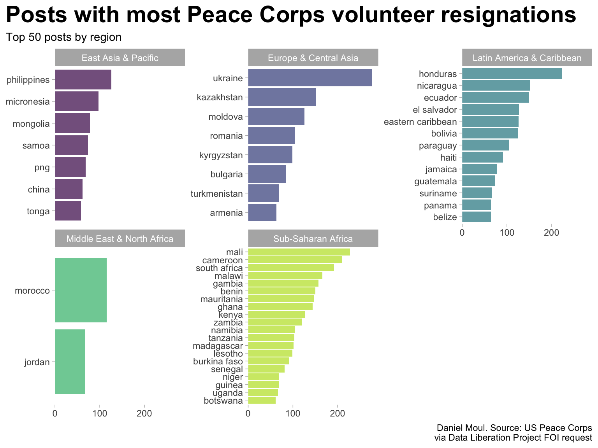
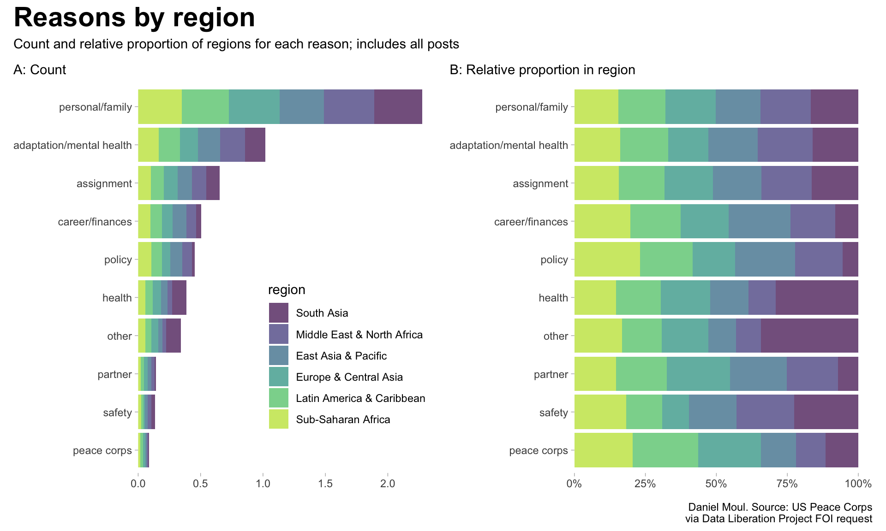
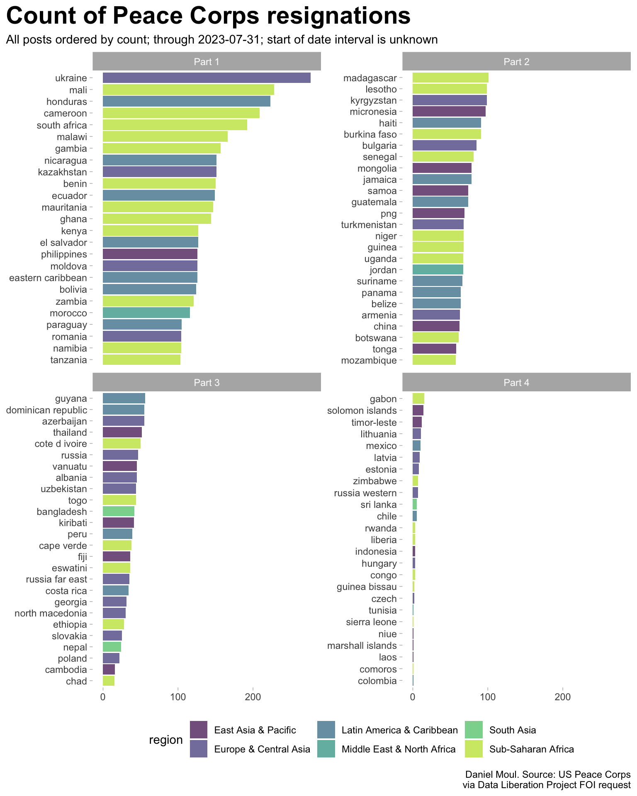
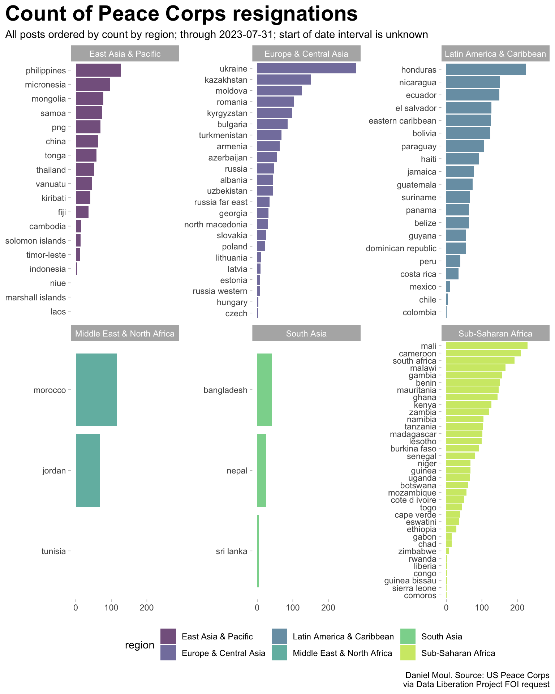

library(here)library(tidyverse)library(lubridate)library(scales)library(units)library(janitor)library(glue)library(readxl)library(gt)library(patchwork)library(broman)library(countrycode)theme_set(theme_light() +theme(panel.border =element_blank(),panel.grid =element_blank(),plot.title =element_text(size =rel(2.0),face ="bold"),plot.title.position ="plot" ))my_caption <-"Daniel Moul. Source: US Peace Corps\nvia Data Liberation Project FOI request"n_cutoff <-50
Show the code
###### Prepare some extra categorical informationdf_reasons_primary <-bind_rows(tibble(descr_primary =c("personal/family", "other personal/family related", "friend(s) or other family responsibility", "death/illness of close friend or family member", "other family", "family financial obligations"),reason_primary ="personal/family" ),tibble(descr_primary =c("adaptation", "unrealistic expectations", "emotional/mental health", "host country culture", "preferred another country/region", "homesick"),reason_primary ="adaptation/mental health" ),tibble(descr_primary =c("resignation in lieu of administrative separation", "peace corps policies", "illegal substance", "alcohol", "unable to adhere to peace corps policies", "use of illegal substance or misuse of alcohol"),reason_primary ="policy" ),tibble(descr_primary =c("other career opportunity", "further education", "financial"),reason_primary ="career/finances" ),tibble(descr_primary =c("job related", "matching skills with work assignment", "other program/work assignment", "other program/work related (please explain)", "host country counterpart/support", "other country assignment/adaptation", "amount of work", "project/site development", "language skills", "host community/host family", "site location", "technical skills", "technical support", "living arrangements/housing location", "assignment not development work/not needed", "insufficient work to do","other job related issues (philosophical difference)", "received inaccurate information re: assignment"),reason_primary ="assignment" ),tibble(descr_primary =c("physical health", "medical concerns", "medical support") ,reason_primary ="health" ),tibble(descr_primary =c("personal safety", "other personal safety", "crime and personal safety", "sexual assault/harassment", "political/civil unrest", "road safety/traveling", "other personal safety (please explain)", "physical assault/harassment", "political/civil unrest makes work too difficult", "road safety concerns/dangerous traveling", "other concerns related to personalsafety"),reason_primary ="safety" ),tibble(descr_primary =c("other", "prefer not to respond", "other (please explain)", "v/t prefers not to respond"),reason_primary ="other" ),tibble(descr_primary =c("romantic interest", "spousal responsibility", "early termination of spouse", "divorce or separation from pcv/t spouse"),reason_primary ="partner" ),tibble(descr_primary =c("other volunteers/trainees", "administrative support", "other peace corps support","peace corps staff in country", "conflict with volunteers/trainees"),reason_primary ="peace corps" )) |>select(reason_primary, descr_primary) |>arrange(reason_primary, descr_primary)df_reasons_secondary <-bind_rows(tibble(descr_secondary =c("death/illness of close friend or family member", "family financial obligations", "friend(s) or other family responsibility", "other family", "other personal/family related", "personal/family"),reason_secondary ="personal/family" ),tibble(descr_secondary =c("adaptation", "emotional/mental health", "host country culture", "language skills", "other country assignment/adaptation", "preferred another country/region", "unrealistic expectations"),reason_secondary ="adaptation/mental health" ),tibble(descr_secondary =c("alcohol", "illegal substance", "peace corps policies", "resignation in lieu of administrative separation", "unable to adhere to peace corps policies", "use of illegal substance or misuse of alcohol"),reason_secondary ="policy" ),tibble(descr_secondary =c("financial", "further education", "other career opportunity"),reason_secondary ="career/finances" ),tibble(descr_secondary =c("amount of work", "assignment not development work/not needed", "conflicts with hc supervisor", "host community/host family", "host country counterpart/support", "job not related to future career goals", "job related", "living arrangements/housing location", "matching skills with work assignment", "other job related issues (philosophical difference)", "other program/work assignment", "other program/work related (please explain)", "project/site development", "received inaccurate information re: assignment", "site location", "technical skills", "technical support") ,reason_secondary ="assignment" ),tibble(descr_secondary =c("medical concerns", "medical support"),reason_secondary ="health" ),tibble(descr_secondary =c("crime and personal safety", "other personal safety", "other personal safety (please explain)", "personal safety", "physical assault/harassment", "physical health", "political/civil unrest", "political/civil unrest makes work too difficult", "road safety concerns/dangerous traveling", "road safety/traveling", "sexual assault/harassment"),reason_secondary ="safety" ),tibble(descr_secondary =c("other", "other (please explain)", "prefer not to respond", "v/t prefers not to respond"),reason_secondary ="other" ),tibble(descr_secondary =c("divorce or separation from pcv/t spouse", "early termination of spouse", "romantic interest", "spousal responsibility"),reason_secondary ="partner" ),tibble(descr_secondary =c("administrative support", "conflict with volunteers/trainees", "other peace corps support", "other volunteers/trainees", "peace corps staff in country"),reason_secondary ="peace corps" )) |>select(reason_secondary, descr_secondary) |>arrange(reason_secondary, descr_secondary)df_country_info <- countrycode::codelist |>clean_names() |>select(country_name_en, continent, region) |>mutate(country_name_en =str_to_lower(country_name_en))###### Get the datadta <-read_xlsx(here("data/raw/Attachment_D_data_pulled_7_31_23.xlsx")) |>clean_names() |>mutate(across(where(is.character), str_to_lower)) |>rename(descr_primary = et_prim_desc,descr_secondary = et_sec_desc,count = count_of_vol_id) |>separate_wider_delim(post_name, names =c("post", "city"),delim ="/",too_few ="align_start") |>select(-c(et_desc, city, et_prim_reason, et_sec_reason)) |>left_join(df_reasons_primary,by ="descr_primary") |>left_join(df_reasons_secondary,by ="descr_secondary") |>left_join(df_country_info,by =join_by(post == country_name_en)) |>mutate(region =if_else(post %in%c("png", "micronesia", "myanmar"),"East Asia & Pacific", region),region =if_else(post %in%c("car", "congo", "cote d ivoire", "zaire", "sao tome", "guinea bissau"),"Sub-Saharan Africa", region),region =if_else(post %in%c("czech", "russia far east", "russia western", "bosnia"),"Europe & Central Asia", region),region =if_else(post %in%c("eastern caribbean"),"Latin America & Caribbean", region) ) |>filter(!region =="pcr us relief") # leaving out 19 data points; since I don't know what this is (which region?)
Without knowing how many volunteers went to each country in this time period, simple counts don’t help us to assess which countries are under- or over-represented in resignations.
A more valid comparison is the proportion of reasons and proportion of regions in the plots with “B” panels below.
Show the code
d_totals_post |>mutate(post =fct_lump_n(post, n_cutoff, w = count)) |>count(post, region, wt = count, sort =TRUE) |>mutate(pct_of_all = n /sum(n)) |>filter(post !="Other") |>mutate(post =fct_reorder(post, n)) |>ggplot(aes(n, post, fill = region)) +geom_col(show.legend =FALSE,alpha =0.7) +scale_x_continuous(expand =expansion(mult =c(0, 0.05))) +scale_fill_viridis_d(end =0.9) +facet_wrap(~region, scales ="free_y") +labs(title =glue("Posts with most Peace Corps volunteer resignations"),subtitle =glue("Top {n_cutoff} posts by region"),x =NULL,y =NULL,caption = my_caption )

Figure 1: Posts with most Peace Corps resignations, grouped by region
Consolidated reasons
The spreadsheet provided by the Peace Corps includes too many categories. So I consolidated them into 10 categories (Figure Primary reasons). The detailed mapping is available in Table Reasons.
p1 <- d_totals_region_primary |>mutate(region =fct_reorder(region, n),reason_primary =fct_reorder(reason_primary, pct_in_region, sum)) |>ggplot(aes(pct_in_region, reason_primary, fill = region)) +geom_col(show.legend =TRUE,alpha =0.7) +scale_x_continuous(expand =expansion(mult =c(0, 0.05))) +scale_fill_viridis_d(end =0.9) +theme(legend.position =c(0.7, 0.3)) +labs(subtitle ="A: Count",x =NULL,y =NULL )p2 <- d_totals_region_primary |>mutate(region =fct_reorder(region, n),reason_primary =fct_reorder(reason_primary, pct_in_region, sum)) |>ggplot(aes(pct_in_region, reason_primary, fill = region)) +geom_col(show.legend =FALSE,position =position_fill(),alpha =0.7) +scale_x_continuous(expand =expansion(mult =c(0, 0.05)),labels =label_percent()) +scale_fill_viridis_d(end =0.9) +labs(subtitle ="B: Relative proportion in region",x =NULL,y =NULL ) p1 + p2 +plot_annotation(title =glue("Reasons by region"),subtitle =glue("Count and relative proportion of regions for each reason; includes all posts"),caption = my_caption )

Figure 4: Count and proportion of reasons colored by region
Reasons ranked
The data set includes primary and secondary reasons in most cases. I use the same categorization for both. As noted in Figure Ranking and counts of primary and secondary reasons for resignation, number of resignations differ (1) in total between primary and secondary reasons; and (2) in the counts of the categories.
Below is the manual consolidation of categories I created. Primary and secondary categories are the same.
Show the code
df_reasons_primary |>gt() |>tab_header(md("**reason_primary is a manual consolidation of descr_primary**")) |>tab_source_note(md("*Daniel Moul. Source: US Peace Corps via Data Liberation Project*"))
Table 2: Reasons
reason_primary is a manual consolidation of descr_primary
reason_primary
descr_primary
adaptation/mental health
adaptation
adaptation/mental health
emotional/mental health
adaptation/mental health
homesick
adaptation/mental health
host country culture
adaptation/mental health
preferred another country/region
adaptation/mental health
unrealistic expectations
assignment
amount of work
assignment
assignment not development work/not needed
assignment
host community/host family
assignment
host country counterpart/support
assignment
insufficient work to do
assignment
job related
assignment
language skills
assignment
living arrangements/housing location
assignment
matching skills with work assignment
assignment
other country assignment/adaptation
assignment
other job related issues (philosophical difference)
assignment
other program/work assignment
assignment
other program/work related (please explain)
assignment
project/site development
assignment
received inaccurate information re: assignment
assignment
site location
assignment
technical skills
assignment
technical support
career/finances
financial
career/finances
further education
career/finances
other career opportunity
health
medical concerns
health
medical support
health
physical health
other
other
other
other (please explain)
other
prefer not to respond
other
v/t prefers not to respond
partner
divorce or separation from pcv/t spouse
partner
early termination of spouse
partner
romantic interest
partner
spousal responsibility
peace corps
administrative support
peace corps
conflict with volunteers/trainees
peace corps
other peace corps support
peace corps
other volunteers/trainees
peace corps
peace corps staff in country
personal/family
death/illness of close friend or family member
personal/family
family financial obligations
personal/family
friend(s) or other family responsibility
personal/family
other family
personal/family
other personal/family related
personal/family
personal/family
policy
alcohol
policy
illegal substance
policy
peace corps policies
policy
resignation in lieu of administrative separation
policy
unable to adhere to peace corps policies
policy
use of illegal substance or misuse of alcohol
safety
crime and personal safety
safety
other concerns related to personalsafety
safety
other personal safety
safety
other personal safety (please explain)
safety
personal safety
safety
physical assault/harassment
safety
political/civil unrest
safety
political/civil unrest makes work too difficult
safety
road safety concerns/dangerous traveling
safety
road safety/traveling
safety
sexual assault/harassment
Daniel Moul. Source: US Peace Corps via Data Liberation Project
Resignations in all posts
Show the code
dta_for_table <- d_totals_post |>arrange(desc(count)) |>mutate(idx =row_number(),layout_col =floor(idx /26) +1,layout_label =glue("Part {layout_col}"),post =fct_reorder(post, count) )dta_for_table |>select(-layout_col) |>ggplot() +geom_col(aes(count, post, fill = region),alpha =0.7) +scale_fill_viridis_d(end =0.9) +facet_wrap(~layout_label, scales ="free_y") +theme(legend.position ="bottom") +labs(title ="Count of Peace Corps resignations",subtitle ="All posts ordered by count; through 2023-07-31; start of date interval is unknown",x =NULL,y =NULL,caption = my_caption )

Figure 6: Count of non-medevac resignations (all posts)
Show the code
dta_for_table <- d_totals_post |>mutate(post =fct_reorder(post, count))dta_for_table |>ggplot() +geom_col(aes(count, post, fill = region),alpha =0.7) +scale_fill_viridis_d(end =0.9) +facet_wrap(~region, scales ="free_y") +theme(legend.position ="bottom") +labs(title ="Count of Peace Corps resignations",subtitle ="All posts ordered by count by region; through 2023-07-31; start of date interval is unknown",x =NULL,y =NULL,caption = my_caption )

Figure 7: Count of resignations (all posts by region)
Other notes
I excluded less than 20 records related to the post “pcr us relief”, presumably Peace Corps Response, for since the data is either not associated with one geographical location or “us relief” implies these assignments were in the USA.